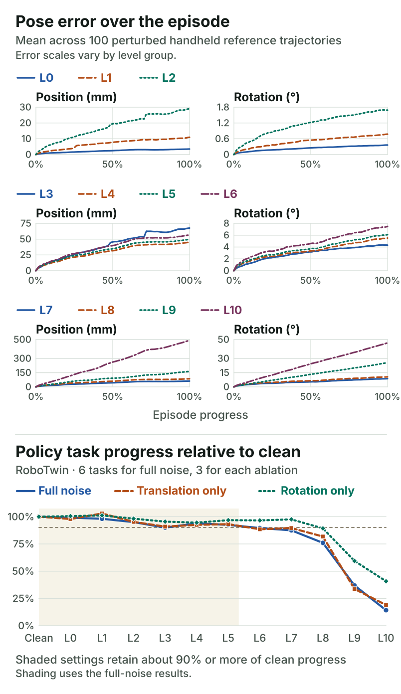
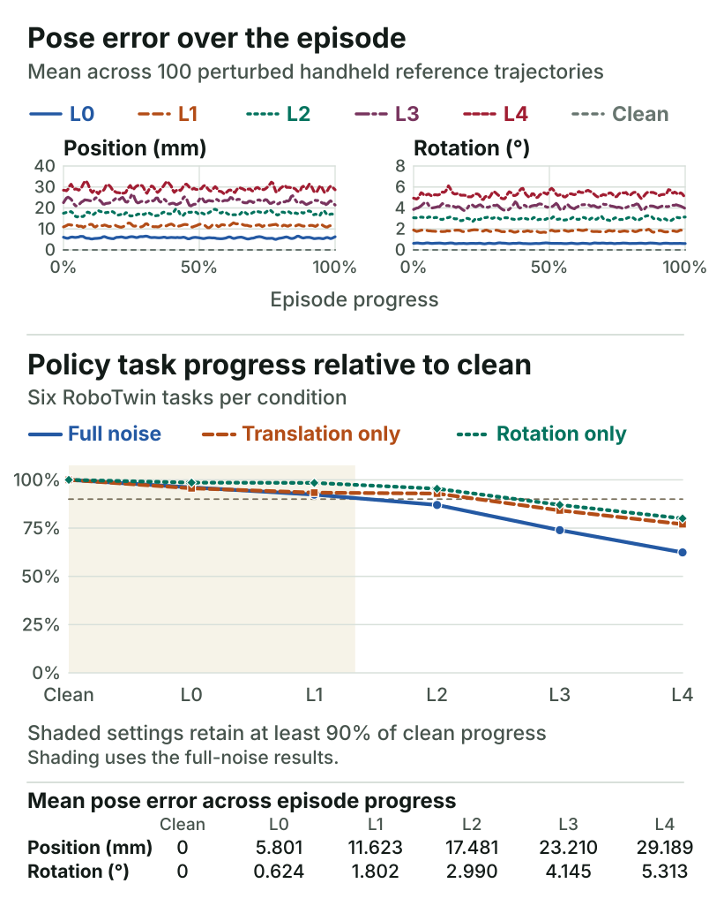
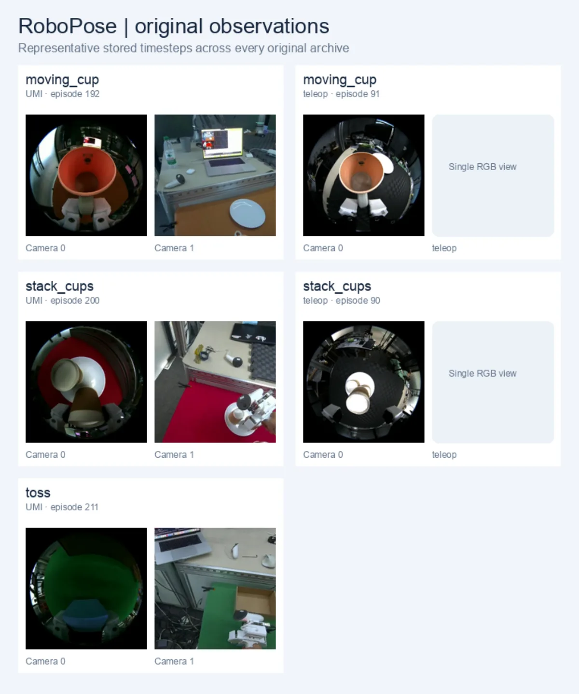

RoboPose
* Equal contribution

One motion, six end-effector pose tracks
Five trackers and the Flexiv robot record the same motion. Position and orientation are synchronized in the aligned Flexiv frame.
Takeaway The median position and rotation differences from Flexiv were 5.3 mm and 1.1° for HTC VIVE Ultimate and 41.8 mm and 1.9° for Insta360 X5.
Explore the trajectories and tool orientations in 3D
Loading recorded trajectories…
- Trajectory accuracy
- Absolute and relative pose error (APE and RPE).
- Action-horizon accuracy
- UMI trajectory-relative pose error (UMI-TRPE).
- Consistency
- Pairwise rigid consistency error and return-to-origin error.
From tracking error to task progress
We measure pose errors on recorded trajectories, then train policies on demonstrations with controlled translation and rotation perturbations.
Tracker accuracy
Takeaway HTC VIVE Ultimate performed best overall, with the lowest error on all five translation metrics and four of five rotation metrics. Meta Quest 3S had the lowest rotational return-to-origin error at 1.86°.

Policy sensitivity to pose noise
Takeaway Across six RoboTwin tasks, normalized task progress fell from 76% at L8 to 37% at L9 and reached 14% of the no-noise baseline at L10.
Noise settings and policy progress by level
| Level | Per-step noise scale | Progress vs. clean |
|---|---|---|
| Clean | 0.00 mm / 0.00° | 100.0% |
| L0 | 0.23 mm / 0.03° | 99.1% |
| L1 | 0.50 mm / 0.06° | 98.1% |
| L2 | 0.76 mm / 0.08° | 95.1% |
| L3 | 1.46 mm / 0.21° | 90.0% |
| L4 | 3.36 mm / 0.52° | 93.9% |
| L5 | 3.80 mm / 0.55° | 92.5% |
| L6 | 4.30 mm / 0.64° | 89.6% |
| L7 | 4.58 mm / 0.72° | 87.5% |
| L8 | 6.72 mm / 0.91° | 76.0% |
| L9 | 5.47 mm / 0.59° | 36.9% |
| L10 | 9.56 mm / 1.00° | 14.2% |
Training noise perturbs the translation and rotation of each relative end-effector step at 0.1 s intervals. The scale for each component is the largest central 68.27% interval half-width across axes. Policy progress averages the six per-task ratios to the clean policy, using 40 rollouts per task and condition.
L8 uses near-zero-mean Gaussian noise. L9 uses tracker-fitted Gaussian and Laplace noise with directional bias.
Open the full pose-noise figureRelative and absolute pose noise
Takeaway With relative noise, mean pose error grew over the episode, reaching 491 mm and 46.5° at L10. At the highest absolute noise level, policies retained 62% of clean task progress with full noise, 77% with translation only and 80% with rotation only.
Relative noise


Absolute noise


The error curves average 100 handheld reference episodes. Policy progress is normalized to the clean result for each task.
Real-robot performance with UMI and teleoperation data
Takeaway Across five real-robot task and data-source settings, overall success fell from 56% without injected noise to 1% at L9. Mean task progress fell from 82.84% to 20.76%.


Each task has 20 trials per noise level. UMI covers moving a cup, stacking cups and tossing. Teleoperation covers moving a cup and stacking cups. The overall curves weight all five settings equally. Download the per-task and aggregate results.
Mixing clean demonstrations and two-stage training
Takeaway With full-trajectory supervision, mixing led at L0, L1, L4 and L6. Two-stage training reached 84.6% at L9 and 78.5% at L10, up from 28.6% and 18.6% with noisy demonstrations alone.


Mean task progress across three RoboTwin tasks. Mixing trains jointly on 200 noisy and 50 clean demonstrations. Two-stage training first uses the noisy demonstrations, then fine-tunes on the clean ones. The supervision windows refer to portions of each clean trajectory.
Applications
Takeaway For real-robot manipulation, π₀.₅ uses recent observations and end-effector states to directly predict a sequence of end-effector poses relative to the latest observed pose.
Synchronized wrist views and end-effector poses from the recorded UMI demonstrations · 30 fps playback · CC BY 4.0
Simulation examples
Two successful RoboTwin rollouts with both policy end-effector poses shown in the simulation world frame.
RoboPose dataset
Real demonstrations of moving cups, stacking cups, and tossing, collected with handheld UMI and robot teleoperation. Archives include RGB images, end-effector poses and gripper signals.
- Episodes
- 1,569
- Timesteps
- 451,505
- Source archives
- 5
